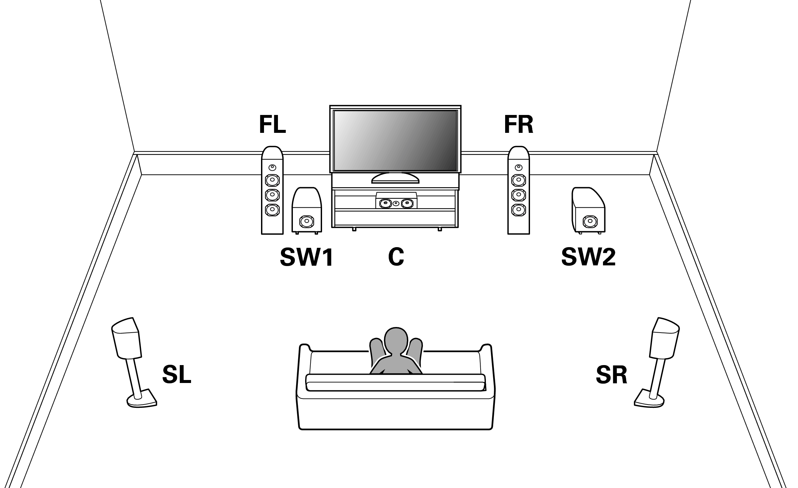
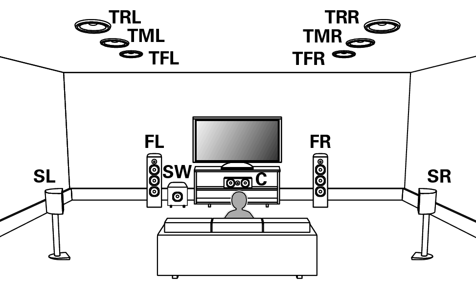
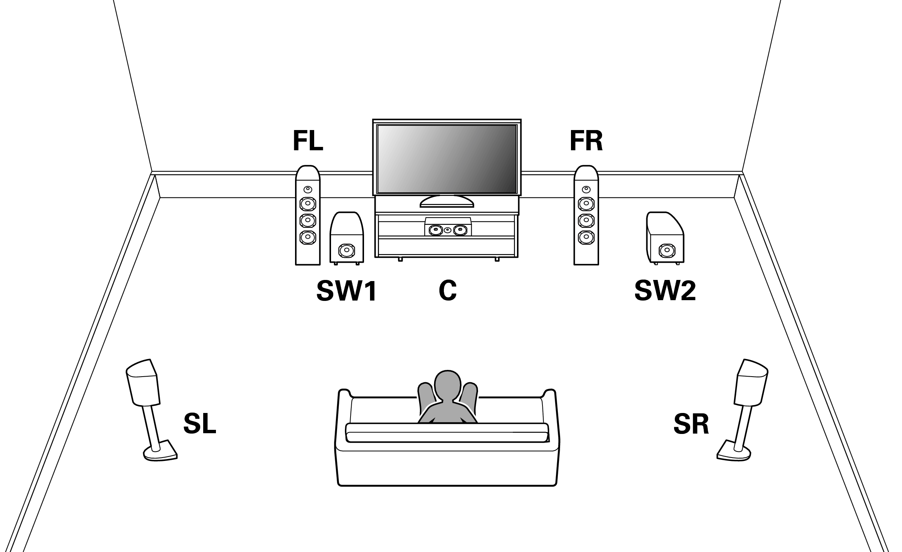
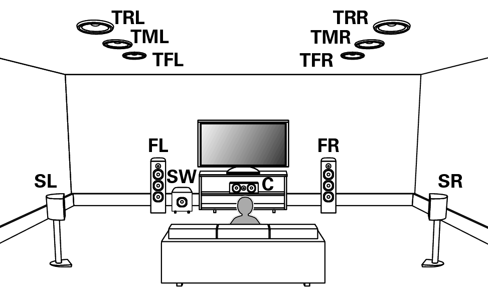

音響機器
Dolby atmos

一般的なテレビや端末は、その筐体にスピーカーがあり、そこから音が来ます。しかし、現実世界では私たちの正面だけから音が鳴るわけではありません。言わずもがな、横や後ろや上など、あらゆる方向から音が鳴ります。

より現実に近い、臨場感がある音を表現するために登場したのがサラウンドです。画像のように視聴者の周囲を取り囲むようにスピーカーを配置します。これにより周囲360°の音は表現できるようになりました。

音響環境をさらに拡張しようとして登場したのが立体音響です。サラウンドは水平方向の音は表現できますが、スピーカーの配置の高さに高低差がありません。拡張するなら高さ方向だということで、天井など高所にスピーカーを設けたのが立体音響です。
このブログを読むにあたっては、「視聴者の周囲（水平方向）を取り囲むのがサラウンド」「配置に鉛直方向の高低差があるのが立体音響」という認識でお願いします。
サラウンドや立体音響を再生する、最も一般的な方法がホームシアターシステムです。画像のように多数のスピーカーを配置し、それらを統括するAVレシーバー（アンプ）と組み合わせて構成するシステムです。サウンドバーはアンプとスピーカーが一体化しているので、それとは対照的なシステムだと考えられます。
ホームシアターシステムの最大の利点はスピーカーの配置です。多くのサウンドバーは棒状の筐体に全てを収めるオールインワンで手軽さを実現しています。後方や上方にまでスピーカーを配置するのは、そんなサウンドバーの方向性とは異なります。一方でホームシアターシステムは、個々のスピーカーの種類や配置を用途や環境に応じて自由に選択できます。
手軽に音を良くするならサウンドバー、中程度から本格派まで幅広く対応できるのがホームシアターシステム、という棲み分けではないかなと思います。
スピーカーの数は合算して表記されることもあります。このブログでは曖昧さ回避のため、スピーカー数を合算せず表記します。例えば5.2.4chを9.2chと表記する事は無く、9.2chと表記する場合は「フロア9つ、サブウーファー2つ、ハイト無し」を意味します。
まず2.0~3.1chくらいの範囲であれば、サウンドバーの方が安上がりです。そもそもチャンネル数の少ないAVレシーバーが少ないですし、有っても安くは無いでしょう。仮にサウンドバーと同価格でホームシアターシステムを組んだとしても、同等の音質に出来るとは思えません。
サラウンドや立体音響の環境を組むのであればもちろん、ホームシアターシステムの方が良いです。例えば5.1chのホームシアターシステムを組む場合、およそ4~6万円かかります。一方その価格帯で5.1chリアルサラウンドを実現したサウンドバーはありません。サウンドバーで5.1chを実現しようと思えば、より高額な機種を購入する必要があります。また、ホームシアターシステムに用いるAVレシーバーは多数の接続端子を備えているので、配線の面でもサウンドバーより優れています。4万円以上であれば、サウンドバーよりもホームシアターシステムのほうが良いでしょう。
「4万円以上ならサウンドバーよりホームシアターシステムの方がいい」という私のスタンス。それを念頭に置きながら、DENONのサウンドバーのラインナップを見ていきましょう。
サウンドバー界においてDENONの地位を一気に高めたと言っても過言ではない、DENONの代表格がDHT-S216です。
ステレオでサブウーファー内蔵の2.1chで、価格はサウンドバーで最も人気な2万円台前半です。「4万円以上ならサウンドバーよりホームシアターシステムの方がいい」という考えからすると、理にかなった製品でしょう。サラウンドではなくステレオにする事でお手頃価格に。サラウンドまでは要らないけど手軽に音質を良くしたいという需要に刺さると思います。私はそう思ってデスクトップPCのスピーカーとして購入しました。
サウンドバーにおいて2万円台は人気なので、多くのメーカーから製品が展開されています。その中でDHT-S216の特徴として挙がるのが、疑似サラウンドを搭載しない事と、入力された音声をそのまま流す「Pureモード」がある事です（※疑似立体音響「DTS Virtual:X」は搭載しています）。
サウンドバーはその形状やコンパクトさやコストから、音質面では不利です。どのメーカーも工夫を凝らしていますが限界はあり、多くのメーカーが音声をソフトウェア補正する事でカバーしています。DHT-S216はその流れに逆行してPureモードまで搭載しました。素の音でも充分良いという自信があるのでしょう。
店頭で試聴した範囲ですが、この価格帯ではDHT-S216が頭一つ抜きん出ています。その秘訣は中音域を担うミッドレンジスピーカーではないかと思います。DHT-S216のスピーカー構成は、高音域のツィーター、中音域のミッドレンジ、低音域のサブウーファーの3段階となっています。2万円台で同様の構成をとるのはYAMAHAのSR-B20Aが挙げられますが、それよりミッドレンジスピーカーが大きいです。実際に聴き比べると、DHT-S216は中音域がしっかりしていて芯がある感じがします。他のメーカーだと高～中音域のスピーカーと低音域のサブウーファーのような2段階構成になっている場合もあるので、充実したスピーカー構成はDHT-S216の強みでしょう。
同時期に発売されたYAMAHAのYAS-109はスマートスピーカー機能や音楽ストリーミング再生機能などを搭載していましたが、DHT-S216はBluetooth（SBC）があるだけです。そういう機能は「低価格化のために搭載しなかった」とのこと。
DHT-S216は、価格が高くならない範囲で純粋に音質だけを良くしたサウンドバーだと思います。サラウンドまでは手が届かないけれど、いい音を楽しみたい！という方にオススメです。
DHT-S216の次に登場したのがDENON HOME SOUND BAR 550です。こちらはDHT-S216とはまるっきり正反対な機種だったので、発表時には困惑しました。
DHT-S216より24cmも短い幅65cmのボディに、DHT-S216より多くのスピーカーユニットを搭載しています。それぞれのスピーカーを独立駆動させる事で優れた音質を実現しているとのこと。立体音響のDolby AtmosやDTS:Xを再生できます。
さらに別売りのスマートスピーカーやワイヤレスサブウーファーを無線接続しリアルサラウンド環境を構築できます。本製品自体もスマートスピーカー機能や音楽ストリーミング再生機能を搭載しています。以上の点だけ見ると凄く良さそうな製品ですよね。
しかし8万円台後半という高価格帯でありながら、2chしかないのです。スピーカー数が足りないので当然ながらサラウンドや立体音響の再生は疑似的なものです。8~11万円で5.1.2chホームシアターシステムが組める事を考えると、かなり割高に感じてしまいます。
小型化したためか、サブウーファーを搭載していません。その代わり、低音を強化するためにパッシブラジエータという装置を3つ搭載しています。この装置は他のスピーカーが発生する空気の振動から、低音を増幅するものであり電気を一切使用しません。もちろん、サブウーファーの方が力強い低音が出るんですけど、小型化できる事と、別売りのワイヤレスサブウーファーがあることから搭載しなかったのでしょう。
※パッシブラジエータを採用した理由は他にありますが、これ以上専門的な話をする事はこのブログの主題ではないので割愛します。
この製品を知ったとき、私は「無理して小型化と高機能化して高価格化したかな」と思いました。DHT-S216では「低価格化のために搭載しなかった」機能が搭載されているのであまり納得できませんでした。
「高価格化するなら多ch化してほしい」と思う方は少なくないでしょう。DENONはちゃんとその思いに合致するサウンドバーを出してくれました。それが1月に発売されたDHT-S517です。
DHT-S517は3.1.2chでDolby Atmos対応。5万円台後半のサウンドバーです。サブウーファーはサウンドバー本体に内蔵されず、無線接続のものが別途同梱されます。3.1.2chの「2」つまり上からの音があります。それをどのように表現するかと言うと、上方に音を放ち天井で反射させるイネーブルドスピーカーで対応しています。DENON HOME SOUND BAR 550よりも低価格で、よりチャンネル数が多いという点で秀でています。
ここまで価格を抑えられた理由は徹底したコストカットにあるそうです。音楽ストリーミング再生機能や、スマートスピーカーとの接続などは一切搭載せず、更に立体音響もDolby Atmosにのみ対応とすることで、コストダウンを図っています。
ホームシアターシステムの対抗馬と成り得る価格帯も魅力です。配置は違えど、5.1チャンネルと3.1.2chはスピーカーの数が同じです。5.1chのホームシアターは4~6万円で構築できることを考えると、5万円台後半で3.1.2ch Dolby Atmos対応というのは一考に値します。「ホームシアターシステムの方がいい」という定説とは異なり、DHT-S517はホームシアターシステムと対等に近い所まで来たサウンドバーだと思います。5.1chならホームシアターシステム、3.1.2ch Dolby AtmosならDHT-S517という二択で。
550の価格帯8万円台後半となると5.1.2chのホームシアターに手が届いてしまいます。つまりこの価格帯のサウンドバーを購入される方は、ホームシアターシステムではなく、サウンドバーが良いという明確な理由がある方だと思います。その理由としては、配線の煩雑さや置き場所でしょう。そう考えると550の小ささは案外利点ではないかと思います。別売りのスマートスピーカーを追加するという機能も、ワイヤレスでリアルサラウンド環境が構築できるという点では良いですね。
そもそも気になっていたのが「DENON HOME SOUND BAR 550」という商品名。DENONのサウンドバーは「DHT-S」で始まる事が多いので珍しいなと思いました。本製品はDENONが展開するスマートスピーカー「DENON HOME」の名を冠しています。また海外のDENONのホームページでは「DENON HOME」のページに、本製品がスマートスピーカーと一緒にリストアップされています。つまり550は言わば「サウンドバーとしての機能も兼ね備えたスマートスピーカー」のような位置付けだと推察されます。そう考えるとAlexaや音楽ストリーミング再生機能を搭載しているのは納得できますね。
お手頃価格で純粋に音質だけ良くしたい場合はDHT-S216ですね。ステレオであればこれが最も費用対効果が良い選択肢だと思います。アンプとスピーカーを別々に買って、DHT-S216を超える環境を作るのは難しそうです。
DHT-S517は「簡単にチャンネル数を増やしたい」「なるべく低価格でDolby Atmosを再生したい」などの目的に合致します。
ホームシアターシステムではなくサウンドバーでリアルサラウンドを構築するなら550です。550単体で見ても、6基のスピーカーを独立駆動させているので高音質です。ステレオで徹底的に高音質にしたい、という需要にも応えられます。
「幅広い需要をカバーする」という観点では競合他社のように多数の機種を出すのもありだと思います。しかしたった3機種だけでも物足りなさを感じさせないラインナップはシンプルで美しく見えて好きです。
まずはNintendo Switchの場合。Switchは5.1chまで対応なので、DENON HOME SOUND BAR 550でリアルサラウンドを構築するのが真っ先に思い浮かびます。しかし携帯機であるためかサラウンド非対応でステレオまでのタイトルも少なくないです。DHT-S216で音質だけ良くするのも安上がりですね。センタースピーカーがあるDHT-S517でセリフを聴きやすくするのも良いと思います。結論、SwitchならDENONのどのサウンドバーも良さそうです。
続いてXboxやWindows。これらは立体音響のDolby Atmosに対応しています。これを活かすなら、DHT-S517やDENON HOME SOUND BAR 550のどちらかでしょう。安くAtmos対応にしたい、ハイトが欲しい、という目的ならDHT-S517です。高くてもリアが欲しければ550でリアルサラウンドを組みます。かく言う私はWindows PCではAtmos対応を諦めて安く済ませようとDHT-S216を使っています。結局のところXboxやWindowsの場合も、DENONのどのサウンドバーも良さそうです。
最後にPlayStation5。Tempest 3Dという独自の疑似立体音響が特徴です。PS5側で疑似立体音響を用いる場合、サウンドバー側でソフトウェア補正してしまうと音声を二重に弄ってしまい意図せぬ変化に繋がります。そこで音響補正せずに再生する「Pureモード」の出番です。Tempest 3Dを活かすなら、DHT-S216やDENON HOME SOUND BAR 550をPureモードで運用するのが良いでしょう。PS5はゲームではDolby Atmosに対応していないので、DHT-S517は活かせそうにありません。
このように、DENONのサウンドバーのラインナップはゲーム用途でもいい感じです。しかしこの記事で言うのもどうかと思いますが、正直言ってゲームのためにサラウンド環境を設けるならホームシアターシステムをおすすめします。Dolby AtmosやSwitchのサラウンド音声は、基本的にHDMIで音響機器に入力する必要があります。DENONのサウンドバーはHDMI入力が1つしかないので、ゲーム機を複数機種持つなら不向きです。また、現在販売されているほぼ全てのサウンドバーは120fpsの映像をパススルーできません。ホームシアターシステムに用いるAVレシーバーなら多数のHDMI入力がありますし、4K 120fpsの映像をパススルーできる機種もあります。まとめると、複数機種持ちではなく、尚且つ60fpsまでで良いという場合なら、サウンドバーも選択肢となると考えられます。
サラウンドではなくステレオを選ぶなら、DHT-S216が非常に良い選択肢になると思います。ステレオなら以上のような接続の問題もありません。というわけで、ゲーム用途におけるサウンドバーはDHT-S216が無敵という事で！
純粋に音質を追究し、2万円台というお手頃価格に抑えたDHT-S216。小型なボディやワイヤレスでのリアルサラウンドなどの利点があるDENON HOME SOUND BAR 550。これらはホームシアターシステムとは異なる需要を狙った製品と言えます。
DHT-S517は同じスピーカー数のホームシアターシステムと近い価格まで抑え、費用対効果ではホームシアターシステムの方がいいという定説を覆した意欲作です。言い過ぎかもしれませんが、ホームシアターシステムと対等に比べられる唯一のサウンドバーと言いたくなります。
まとめると、DENONのサウンドバーのラインナップは「ホームシアターシステムとの共存ができる製品」のように思えます。ホームシアターシステムが絶対的に良い。だからこそ異なる需要を狙った製品を作るのは理にかなっています。それだけでなく、ホームシアターシステムと張り合える新製品DHT-S517まで出ました。ここまでくると、「ホームシアターシステムの方が絶対的に良い」と言ってサウンドバーを見下したりは出来ないですね。
Denonのサウンドバーのラインナップが強いって話
みなさんこんにちは！元素さんです。
みなさんはテレビの音質に満足していますか？ TVは年々薄型化していますが、スピーカーはある程度大きい方がいいです。
つまり、最近のTVほど音質面で不利なのです。
そのため最近はサウンドバーという棒状のスピーカーが人気ですね。TVとケーブル1~2本で繋ぐだけなので手軽に音質を改善できます。
そんなサウンドバー界隈に期待の新星が現れました。DENONのDHT-S517です。
「こんなサウンドバー出ないかな」と思い描いていた製品が実際に出たので興奮しましたが、それだけでなく冷静に考察してみるとDENONの良さが見えてきたような気がします。
今回はDENONのサウンドバーのラインナップについて、あくまで一人の音響オタクとして考察したことを紹介します。
目次
- サラウンドと立体音響
- ホームシアターシステム
- 疑似サラウンド
- チャンネル数
- 費用対効果の話
- DHT-S216
- DENON HOME SOUND BAR 550
- DHT-S517
- HOME 550を再考する
- ラインナップを考察してみる
- ゲームのための音響機器選び
- あとがき
サラウンドと立体音響
まず必要となる前提知識を幾つか紹介させていただきます。まずはサラウンドや立体音響について。一般的なテレビや端末は、その筐体にスピーカーがあり、そこから音が来ます。しかし、現実世界では私たちの正面だけから音が鳴るわけではありません。言わずもがな、横や後ろや上など、あらゆる方向から音が鳴ります。

より現実に近い、臨場感がある音を表現するために登場したのがサラウンドです。画像のように視聴者の周囲を取り囲むようにスピーカーを配置します。これにより周囲360°の音は表現できるようになりました。

音響環境をさらに拡張しようとして登場したのが立体音響です。サラウンドは水平方向の音は表現できますが、スピーカーの配置の高さに高低差がありません。拡張するなら高さ方向だということで、天井など高所にスピーカーを設けたのが立体音響です。
このブログを読むにあたっては、「視聴者の周囲（水平方向）を取り囲むのがサラウンド」「配置に鉛直方向の高低差があるのが立体音響」という認識でお願いします。
ホームシアターシステム
サラウンドや立体音響を再生する、最も一般的な方法がホームシアターシステムです。画像のように多数のスピーカーを配置し、それらを統括するAVレシーバー（アンプ）と組み合わせて構成するシステムです。サウンドバーはアンプとスピーカーが一体化しているので、それとは対照的なシステムだと考えられます。
ホームシアターシステムの最大の利点はスピーカーの配置です。多くのサウンドバーは棒状の筐体に全てを収めるオールインワンで手軽さを実現しています。後方や上方にまでスピーカーを配置するのは、そんなサウンドバーの方向性とは異なります。一方でホームシアターシステムは、個々のスピーカーの種類や配置を用途や環境に応じて自由に選択できます。
手軽に音を良くするならサウンドバー、中程度から本格派まで幅広く対応できるのがホームシアターシステム、という棲み分けではないかなと思います。
疑似サラウンド
サラウンドや立体音響はステレオよりも豊かな聞こえ方を実現しますが、すべての環境で導入できるとは限りません。多くの機器はその筐体にのみスピーカーがあり、視聴者の後方や上方にまでスピーカーを配置できません。サウンドバーの多くも同様です。そんなこんなで採用される技術が、擬似サラウンドです。ざっくりいうと人間の耳が音の位置を感知する仕組みを利用します。耳の錯覚を引き起こすことで、あたかも様々な方角で音が鳴っているかのように聴こえさせる技術です。この技術はヘッドホンやサウンドバー、TVなどで広く利活用されています。チャンネル数
チャンネル数はサラウンド環境ではスピーカー、つまり音の発生源の数を示します。例えば5.1chや7.2.4chのように、複数個の数字で表されます。一つ目の数字が従来のサラウンド環境に用いるスピーカー（これをフロアと言います）の数、二つ目がサブウーファー（重低音用スピーカー）の数、三つ目が立体音響で用いる高さ方向のスピーカー（ハイトと呼称されます）の数です。スピーカーの数は合算して表記されることもあります。このブログでは曖昧さ回避のため、スピーカー数を合算せず表記します。例えば5.2.4chを9.2chと表記する事は無く、9.2chと表記する場合は「フロア9つ、サブウーファー2つ、ハイト無し」を意味します。
費用対効果の話
さて、先ほど紹介したホームシアターシステムとサウンドバーどちらがよいのでしょうか？ それはチャンネル数と価格帯が関わります。まず2.0~3.1chくらいの範囲であれば、サウンドバーの方が安上がりです。そもそもチャンネル数の少ないAVレシーバーが少ないですし、有っても安くは無いでしょう。仮にサウンドバーと同価格でホームシアターシステムを組んだとしても、同等の音質に出来るとは思えません。
サラウンドや立体音響の環境を組むのであればもちろん、ホームシアターシステムの方が良いです。例えば5.1chのホームシアターシステムを組む場合、およそ4~6万円かかります。一方その価格帯で5.1chリアルサラウンドを実現したサウンドバーはありません。サウンドバーで5.1chを実現しようと思えば、より高額な機種を購入する必要があります。また、ホームシアターシステムに用いるAVレシーバーは多数の接続端子を備えているので、配線の面でもサウンドバーより優れています。4万円以上であれば、サウンドバーよりもホームシアターシステムのほうが良いでしょう。
「4万円以上ならサウンドバーよりホームシアターシステムの方がいい」という私のスタンス。それを念頭に置きながら、DENONのサウンドバーのラインナップを見ていきましょう。
DHT-S216
サウンドバー界においてDENONの地位を一気に高めたと言っても過言ではない、DENONの代表格がDHT-S216です。
ステレオでサブウーファー内蔵の2.1chで、価格はサウンドバーで最も人気な2万円台前半です。「4万円以上ならサウンドバーよりホームシアターシステムの方がいい」という考えからすると、理にかなった製品でしょう。サラウンドではなくステレオにする事でお手頃価格に。サラウンドまでは要らないけど手軽に音質を良くしたいという需要に刺さると思います。私はそう思ってデスクトップPCのスピーカーとして購入しました。
サウンドバーにおいて2万円台は人気なので、多くのメーカーから製品が展開されています。その中でDHT-S216の特徴として挙がるのが、疑似サラウンドを搭載しない事と、入力された音声をそのまま流す「Pureモード」がある事です（※疑似立体音響「DTS Virtual:X」は搭載しています）。
サウンドバーはその形状やコンパクトさやコストから、音質面では不利です。どのメーカーも工夫を凝らしていますが限界はあり、多くのメーカーが音声をソフトウェア補正する事でカバーしています。DHT-S216はその流れに逆行してPureモードまで搭載しました。素の音でも充分良いという自信があるのでしょう。
店頭で試聴した範囲ですが、この価格帯ではDHT-S216が頭一つ抜きん出ています。その秘訣は中音域を担うミッドレンジスピーカーではないかと思います。DHT-S216のスピーカー構成は、高音域のツィーター、中音域のミッドレンジ、低音域のサブウーファーの3段階となっています。2万円台で同様の構成をとるのはYAMAHAのSR-B20Aが挙げられますが、それよりミッドレンジスピーカーが大きいです。実際に聴き比べると、DHT-S216は中音域がしっかりしていて芯がある感じがします。他のメーカーだと高～中音域のスピーカーと低音域のサブウーファーのような2段階構成になっている場合もあるので、充実したスピーカー構成はDHT-S216の強みでしょう。
同時期に発売されたYAMAHAのYAS-109はスマートスピーカー機能や音楽ストリーミング再生機能などを搭載していましたが、DHT-S216はBluetooth（SBC）があるだけです。そういう機能は「低価格化のために搭載しなかった」とのこと。
DHT-S216は、価格が高くならない範囲で純粋に音質だけを良くしたサウンドバーだと思います。サラウンドまでは手が届かないけれど、いい音を楽しみたい！という方にオススメです。
DENON HOME SOUND BAR 550
DHT-S216の次に登場したのがDENON HOME SOUND BAR 550です。こちらはDHT-S216とはまるっきり正反対な機種だったので、発表時には困惑しました。
DHT-S216より24cmも短い幅65cmのボディに、DHT-S216より多くのスピーカーユニットを搭載しています。それぞれのスピーカーを独立駆動させる事で優れた音質を実現しているとのこと。立体音響のDolby AtmosやDTS:Xを再生できます。
さらに別売りのスマートスピーカーやワイヤレスサブウーファーを無線接続しリアルサラウンド環境を構築できます。本製品自体もスマートスピーカー機能や音楽ストリーミング再生機能を搭載しています。以上の点だけ見ると凄く良さそうな製品ですよね。
しかし8万円台後半という高価格帯でありながら、2chしかないのです。スピーカー数が足りないので当然ながらサラウンドや立体音響の再生は疑似的なものです。8~11万円で5.1.2chホームシアターシステムが組める事を考えると、かなり割高に感じてしまいます。
小型化したためか、サブウーファーを搭載していません。その代わり、低音を強化するためにパッシブラジエータという装置を3つ搭載しています。この装置は他のスピーカーが発生する空気の振動から、低音を増幅するものであり電気を一切使用しません。もちろん、サブウーファーの方が力強い低音が出るんですけど、小型化できる事と、別売りのワイヤレスサブウーファーがあることから搭載しなかったのでしょう。
※パッシブラジエータを採用した理由は他にありますが、これ以上専門的な話をする事はこのブログの主題ではないので割愛します。
この製品を知ったとき、私は「無理して小型化と高機能化して高価格化したかな」と思いました。DHT-S216では「低価格化のために搭載しなかった」機能が搭載されているのであまり納得できませんでした。
「高価格化するなら多ch化してほしい」と思う方は少なくないでしょう。DENONはちゃんとその思いに合致するサウンドバーを出してくれました。それが1月に発売されたDHT-S517です。
DHT-S517
DHT-S517は3.1.2chでDolby Atmos対応。5万円台後半のサウンドバーです。サブウーファーはサウンドバー本体に内蔵されず、無線接続のものが別途同梱されます。3.1.2chの「2」つまり上からの音があります。それをどのように表現するかと言うと、上方に音を放ち天井で反射させるイネーブルドスピーカーで対応しています。DENON HOME SOUND BAR 550よりも低価格で、よりチャンネル数が多いという点で秀でています。
ここまで価格を抑えられた理由は徹底したコストカットにあるそうです。音楽ストリーミング再生機能や、スマートスピーカーとの接続などは一切搭載せず、更に立体音響もDolby Atmosにのみ対応とすることで、コストダウンを図っています。
ホームシアターシステムの対抗馬と成り得る価格帯も魅力です。配置は違えど、5.1チャンネルと3.1.2chはスピーカーの数が同じです。5.1chのホームシアターは4~6万円で構築できることを考えると、5万円台後半で3.1.2ch Dolby Atmos対応というのは一考に値します。「ホームシアターシステムの方がいい」という定説とは異なり、DHT-S517はホームシアターシステムと対等に近い所まで来たサウンドバーだと思います。5.1chならホームシアターシステム、3.1.2ch Dolby AtmosならDHT-S517という二択で。
HOME 550を再考する
DHT-S517の登場により、DENON HOME SOUND BAR 550とは一体何だったのかと思われる方も多いでしょう。これはあくまで私の考察ですが、550は他のサウンドバーとは異なる考え方で作られたのではないかと思います。550の価格帯8万円台後半となると5.1.2chのホームシアターに手が届いてしまいます。つまりこの価格帯のサウンドバーを購入される方は、ホームシアターシステムではなく、サウンドバーが良いという明確な理由がある方だと思います。その理由としては、配線の煩雑さや置き場所でしょう。そう考えると550の小ささは案外利点ではないかと思います。別売りのスマートスピーカーを追加するという機能も、ワイヤレスでリアルサラウンド環境が構築できるという点では良いですね。
そもそも気になっていたのが「DENON HOME SOUND BAR 550」という商品名。DENONのサウンドバーは「DHT-S」で始まる事が多いので珍しいなと思いました。本製品はDENONが展開するスマートスピーカー「DENON HOME」の名を冠しています。また海外のDENONのホームページでは「DENON HOME」のページに、本製品がスマートスピーカーと一緒にリストアップされています。つまり550は言わば「サウンドバーとしての機能も兼ね備えたスマートスピーカー」のような位置付けだと推察されます。そう考えるとAlexaや音楽ストリーミング再生機能を搭載しているのは納得できますね。
ラインナップを考察してみる
さて、ここまで3つのサウンドバーを紹介してきました。ステレオで2万円くらいのDHT-S216。多機能で高音質なDENON HOME SOUND BAR 550。3.1.2chでありながら5万円台後半に抑えたDHT-S517。この3つで幅広い需要をカバー出来ていると思います。お手頃価格で純粋に音質だけ良くしたい場合はDHT-S216ですね。ステレオであればこれが最も費用対効果が良い選択肢だと思います。アンプとスピーカーを別々に買って、DHT-S216を超える環境を作るのは難しそうです。
DHT-S517は「簡単にチャンネル数を増やしたい」「なるべく低価格でDolby Atmosを再生したい」などの目的に合致します。
ホームシアターシステムではなくサウンドバーでリアルサラウンドを構築するなら550です。550単体で見ても、6基のスピーカーを独立駆動させているので高音質です。ステレオで徹底的に高音質にしたい、という需要にも応えられます。
「幅広い需要をカバーする」という観点では競合他社のように多数の機種を出すのもありだと思います。しかしたった3機種だけでも物足りなさを感じさせないラインナップはシンプルで美しく見えて好きです。
ゲームのための音響機器選び
私は単にオーディオが好きというわけではなく、ゲームや音楽をより一層楽しめるようにする手段として音響に凝っています。そんなこんなで、今回紹介したサウンドバーを中心に、ゲームのための音響機器選びを考えてみます！まずはNintendo Switchの場合。Switchは5.1chまで対応なので、DENON HOME SOUND BAR 550でリアルサラウンドを構築するのが真っ先に思い浮かびます。しかし携帯機であるためかサラウンド非対応でステレオまでのタイトルも少なくないです。DHT-S216で音質だけ良くするのも安上がりですね。センタースピーカーがあるDHT-S517でセリフを聴きやすくするのも良いと思います。結論、SwitchならDENONのどのサウンドバーも良さそうです。
続いてXboxやWindows。これらは立体音響のDolby Atmosに対応しています。これを活かすなら、DHT-S517やDENON HOME SOUND BAR 550のどちらかでしょう。安くAtmos対応にしたい、ハイトが欲しい、という目的ならDHT-S517です。高くてもリアが欲しければ550でリアルサラウンドを組みます。かく言う私はWindows PCではAtmos対応を諦めて安く済ませようとDHT-S216を使っています。結局のところXboxやWindowsの場合も、DENONのどのサウンドバーも良さそうです。
最後にPlayStation5。Tempest 3Dという独自の疑似立体音響が特徴です。PS5側で疑似立体音響を用いる場合、サウンドバー側でソフトウェア補正してしまうと音声を二重に弄ってしまい意図せぬ変化に繋がります。そこで音響補正せずに再生する「Pureモード」の出番です。Tempest 3Dを活かすなら、DHT-S216やDENON HOME SOUND BAR 550をPureモードで運用するのが良いでしょう。PS5はゲームではDolby Atmosに対応していないので、DHT-S517は活かせそうにありません。
このように、DENONのサウンドバーのラインナップはゲーム用途でもいい感じです。しかしこの記事で言うのもどうかと思いますが、正直言ってゲームのためにサラウンド環境を設けるならホームシアターシステムをおすすめします。Dolby AtmosやSwitchのサラウンド音声は、基本的にHDMIで音響機器に入力する必要があります。DENONのサウンドバーはHDMI入力が1つしかないので、ゲーム機を複数機種持つなら不向きです。また、現在販売されているほぼ全てのサウンドバーは120fpsの映像をパススルーできません。ホームシアターシステムに用いるAVレシーバーなら多数のHDMI入力がありますし、4K 120fpsの映像をパススルーできる機種もあります。まとめると、複数機種持ちではなく、尚且つ60fpsまでで良いという場合なら、サウンドバーも選択肢となると考えられます。
サラウンドではなくステレオを選ぶなら、DHT-S216が非常に良い選択肢になると思います。ステレオなら以上のような接続の問題もありません。というわけで、ゲーム用途におけるサウンドバーはDHT-S216が無敵という事で！
あとがき
かつては「サウンドバーよりホームシアターシステムの方が絶対的に良い」と思っていました。しかし今回考察してみるて、DENONのラインナップもいいなと思えてきました。純粋に音質を追究し、2万円台というお手頃価格に抑えたDHT-S216。小型なボディやワイヤレスでのリアルサラウンドなどの利点があるDENON HOME SOUND BAR 550。これらはホームシアターシステムとは異なる需要を狙った製品と言えます。
DHT-S517は同じスピーカー数のホームシアターシステムと近い価格まで抑え、費用対効果ではホームシアターシステムの方がいいという定説を覆した意欲作です。言い過ぎかもしれませんが、ホームシアターシステムと対等に比べられる唯一のサウンドバーと言いたくなります。
まとめると、DENONのサウンドバーのラインナップは「ホームシアターシステムとの共存ができる製品」のように思えます。ホームシアターシステムが絶対的に良い。だからこそ異なる需要を狙った製品を作るのは理にかなっています。それだけでなく、ホームシアターシステムと張り合える新製品DHT-S517まで出ました。ここまでくると、「ホームシアターシステムの方が絶対的に良い」と言ってサウンドバーを見下したりは出来ないですね。